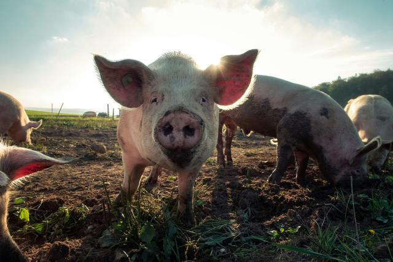
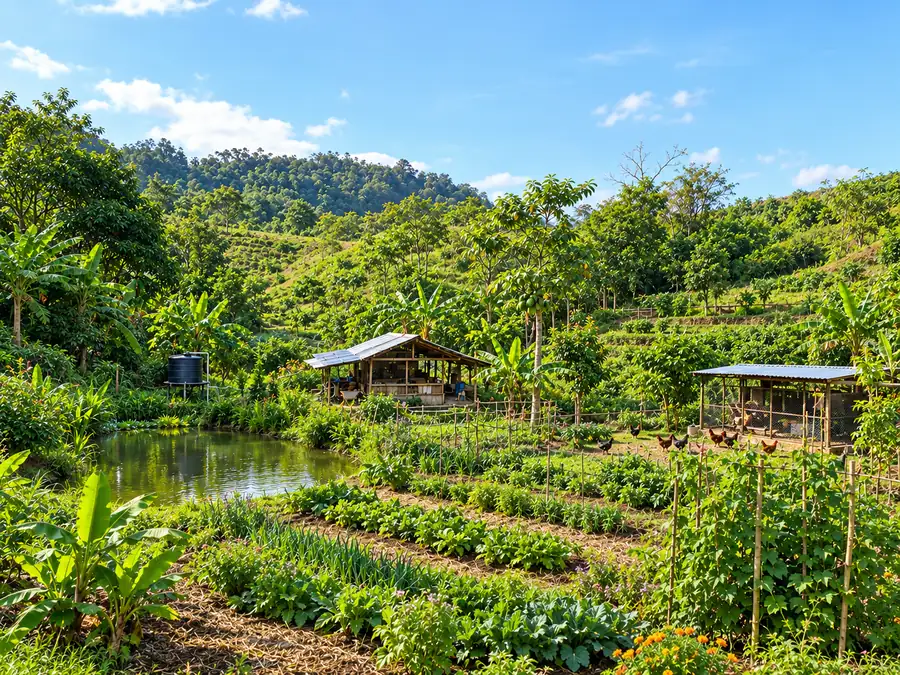
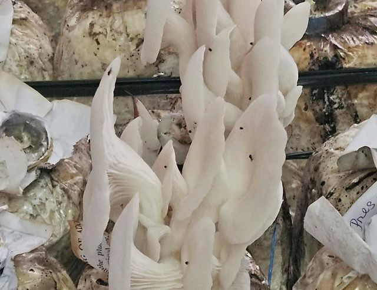
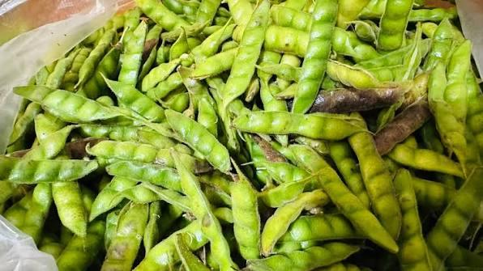
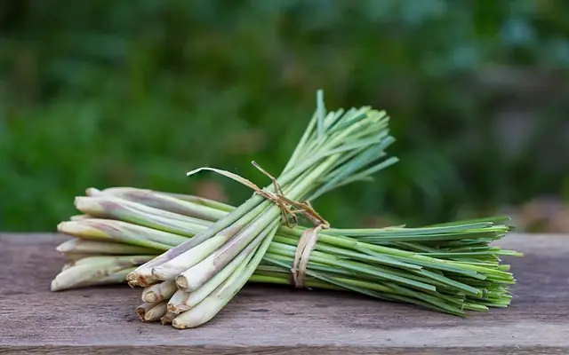
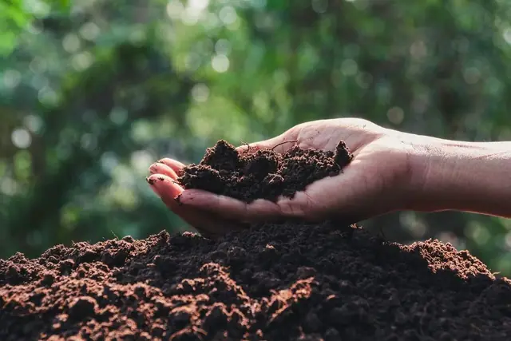
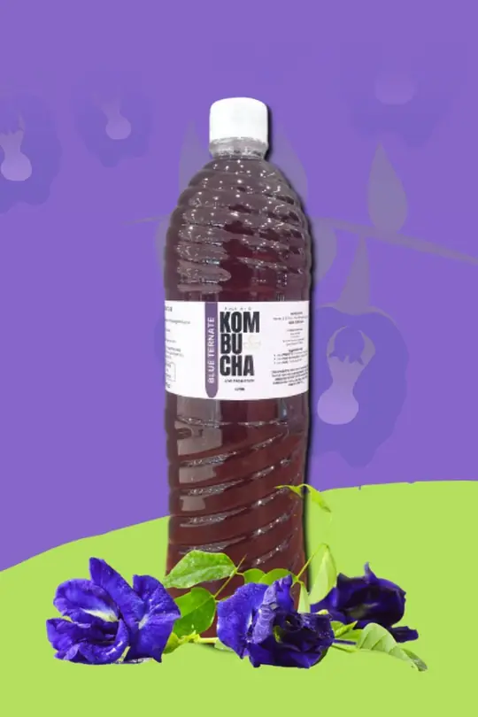
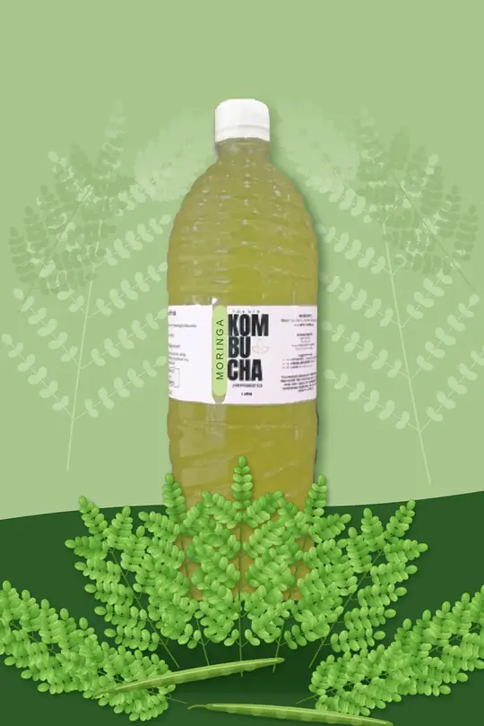
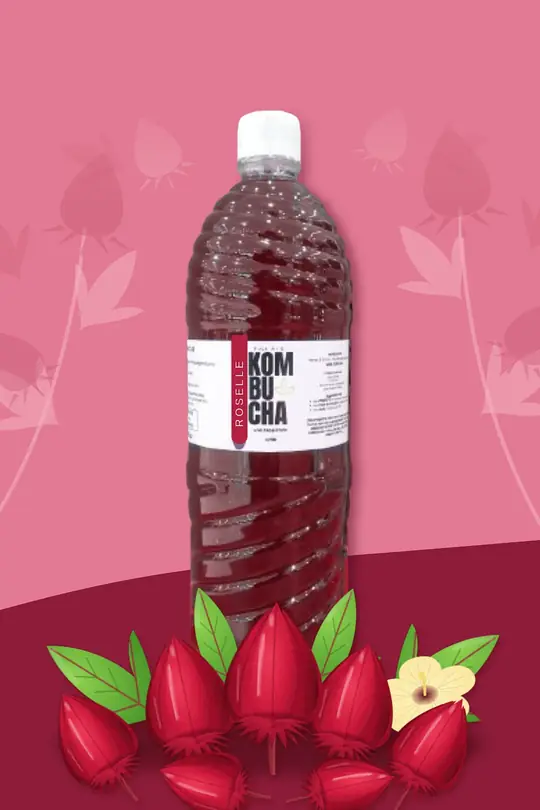
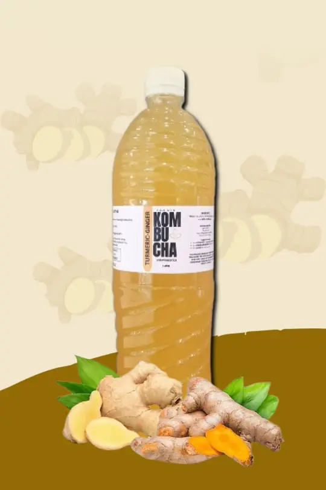

Pork Baboy
Pigs raised on our farm, available three ways.
Discover naturally grown vegetables, seasonal fruits, herbs, naturally raised livestock, and thoughtfully made farm products from our garden in Peñablanca, Cagayan. Rooted in sustainable farming and a love for God's creation, we nurture the land and animals with care, bringing you closer to the goodness of the farm.
Cultivating abundant life. Stewarding God's creation.

Grown in living soilNo chemical fertilizers or pesticides
Fresh from the garden
Vegetables, fruit and herbs grown in living soil and harvested when they're ready. What's available changes with the season.
Farm products
Besides fresh produce, we raise pigs, grow mushrooms and herbs, brew kombucha and make our own compost. Ask us what's available this week.

Pigs raised on our farm, available three ways.

Fresh mushrooms grown on the farm, including oyster mushroom, straw mushroom (kabuteng dayami) and wood ear (tainga ng daga). Great for sinigang, adobo, sisig or crispy fried.

Hardy legume we grow among our crops. It feeds the soil with nitrogen as it grows.

Fragrant stalks for cooking, tea and drinks, cut fresh from the garden.

Composted pig manure from our farm, to feed your garden soil the natural way.

A deep blue-purple brew made with butterfly pea flowers from our garden. Add a squeeze of citrus and watch it change color.

Our vibrant green kombucha, infused with fresh moringa leaves from the “miracle tree”. Packed with vitamins A, C and E, calcium and amino acids.

A ruby-red brew of roselle (hibiscus) flowers harvested from our farm. Tart, refreshing and high in vitamin C.

A golden, earthy brew made with turmeric and ginger root, with a gentle peppery warmth. Smooth, lightly spiced and great over ice.
More kombucha flavors brewing all the time.
Our farm
We design the whole farm as one system, so water, soil, plants, animals and people support each other.
We plant in layers and in succession, from groundcover to canopy, and prune often to feed the soil, the way a forest does.
We feed the soil with inputs made on the farm, like indigenous microorganisms (IMO) and fermented plant juice.
Around the farm
Our hills, crops, animals and the people who tend them. Tap a photo to see it larger.
Why we are called Perissos
“I am come that they might have life, and that they might have it more abundantly.”
John 10:10
Perissos (περισσός, say peh-ree-SOS) is the Greek word behind “more abundantly”: overflowing, more than enough. It is what we see when land is cared for well. Soil, harvests and community grow richer every season.
Order or get in touch
Send us a message to order produce or farm products, or to ask about wholesale. We're in Peñablanca, Cagayan, a short drive from Tuguegarao City. We usually reply within [1–2 days].
Peñablanca, Cagayan
0917 854 0644
info@perissosgarden.com